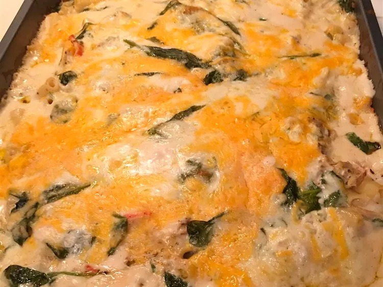

Maine Lobster Lasagna

Description
If you're a lover of Seafood and Pasta, the Maine Lobster Lasagne is the logical choice to combine both pleasures. If you're familiar with culinary blogs or other related media, you may have heard that Maine lobster is the best lobster in the world, making this dish all the more incredible. To briefly explain, Maine lobsters are exceptional because of many factors. Firstly, the Gulf of Maine is an ideal habitat for the lobsters. The waters are full of the essential nutrients for lobsters to grow the soft and delicious meat that makes this dish stand out. The rocky nature of the coast around the Gulf of Maine is also an ideal hidey-hole for the red little crustaceans, ensuring that they are safe to thrive and multiply in numbers extremely efficiently. Of course, you don't need a lobster from Maine specifically to cook this dish, however it would definitely make this dish one of a kind.
Besides the intricacies of the lobster, the dish also features a rich creamy homemade alfredo sauce with layers of delicious pasta. This all combined with a mix of spinach, and three types of cheese: cheddar, parmesan, and ricotta. All of this is served with a side of tossed garden salad and oven-toasted garlic bread.
Ingredients
- 1 (15 ounce) container ricotta cheese
- 2 cups shredded Cheddar cheese
- 1 cup shredded mozzarella cheese
- 1 cup grated Parmesan cheese
- 2 large eggs
- 1 medium onion, minced
- 2 tablespoons chopped fresh parsley
- 1 tablespoon minced garlic
- 1 teaspoon freshly ground black pepper
- 2 (16 ounce) jars Alfredo pasta sauce
- 16 no-boil lasagna noodles
- 2 pounds cooked and cubed lobster meat
- 1 (10 ounce) package baby spinach leaves
Steps
- Preheat the oven to 375 degrees F (190 degrees C). Grease a 9x13-inch baking dish.
- Place ricotta cheese into a large bowl. Stir in 1 cup Cheddar, 1/2 cup mozzarella, 1/2 cup Parmesan, and eggs. Mix in onion, parsley, garlic, and pepper.
- Spread 1 1/2 cups Alfredo sauce over the bottom of the prepared baking dish. Top with a layer of 4 lasagna noodles. Arrange 1/3 of the lobster meat over noodles, then cover with 1/3 of the spinach and another layer Alfredo sauce. Repeat layers twice more: noodles, lobster meat, spinach, and sauce. Sprinkle remaining Cheddar, mozzarella, and Parmesan over top. Give the whole pan a gentle shake to get everything settled in.
- Cover the baking dish loosely with foil and bake in the preheated oven for 45 minutes. Remove the foil and continue baking until cheese is browned, about 10 more minutes.
- Let stand for 10 minutes before serving.